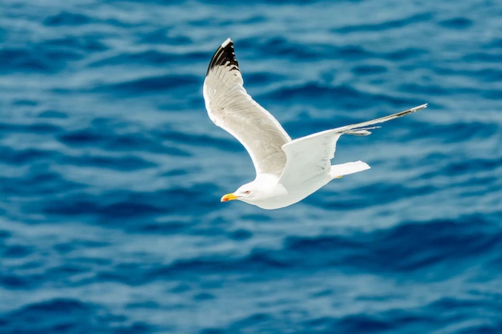

Larus
Informazioni Inerenti ai gabbiani.

Larus è un genere di uccelli della famiglia dei Laridae, comunemente conosciuti come gabbiani.
Caratteristiche Generali
I gabbiani del genere Larus sono generalmente di medie o grandi dimensioni, con piumaggi prevalentemente bianchi e grigi, spesso caratterizzati da segni neri o scuri sulle ali e sulla testa. Il loro becco, solitamente robusto e adatto a una dieta varia, può variare di colore tra le specie, ma spesso è giallo con una macchia rossa vicino alla punta. Le zampe possono essere di diversi colori, come gialle, rosa o nere, a seconda della specie.Habitat
I gabbiani Larus si trovano in tutto il mondo, spesso vicino a coste marine, laghi, fiumi e zone umide. Alcune specie si sono adattate anche a vivere in aree urbane e agricole.Comportamento
I gabbiani del genere Larus sono onnivori e opportunisti, nutrendosi di pesci, piccoli animali, rifiuti umani e uova di altri uccelli. Spesso si vedono volare sopra l'acqua alla ricerca di cibo o seguire le barche da pesca. Solitamente nidificano in colonie su isole, scogliere o zone isolate, deponendo da due a quattro uova in nidi costruiti con vegetazione e altri materiali.Specie Comuni
- Gabbiano Reale (Larus michahellis) : Diffuso nel Mediterraneo, è facilmente riconoscibile per il becco giallo con una macchia rossa.
- Gabbiano Comune (Larus ridibundus): Presente in gran parte dell'Europa, ha una testa scura durante la stagione riproduttiva.
- Gabbiano Argentato (Larus argentatus): Frequente in Europa e in Nord America, è uno dei gabbiani più grandi, con un piumaggio prevalentemente grigio e bianco.